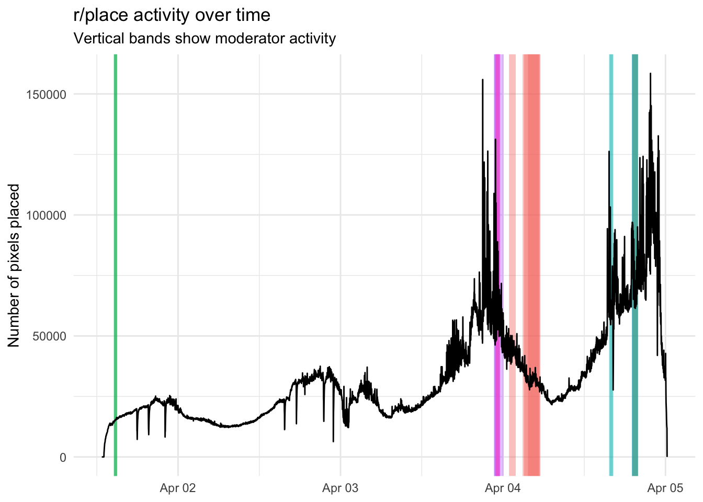
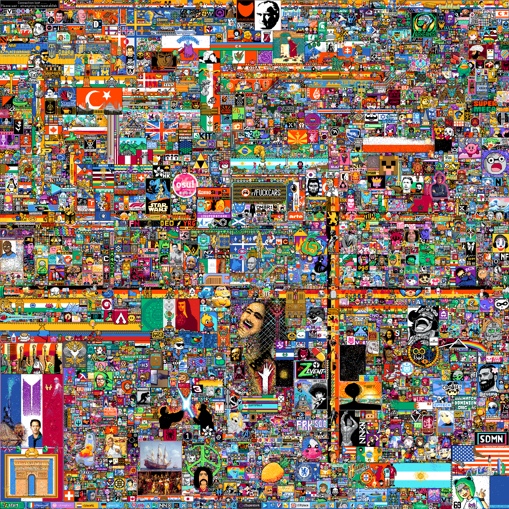
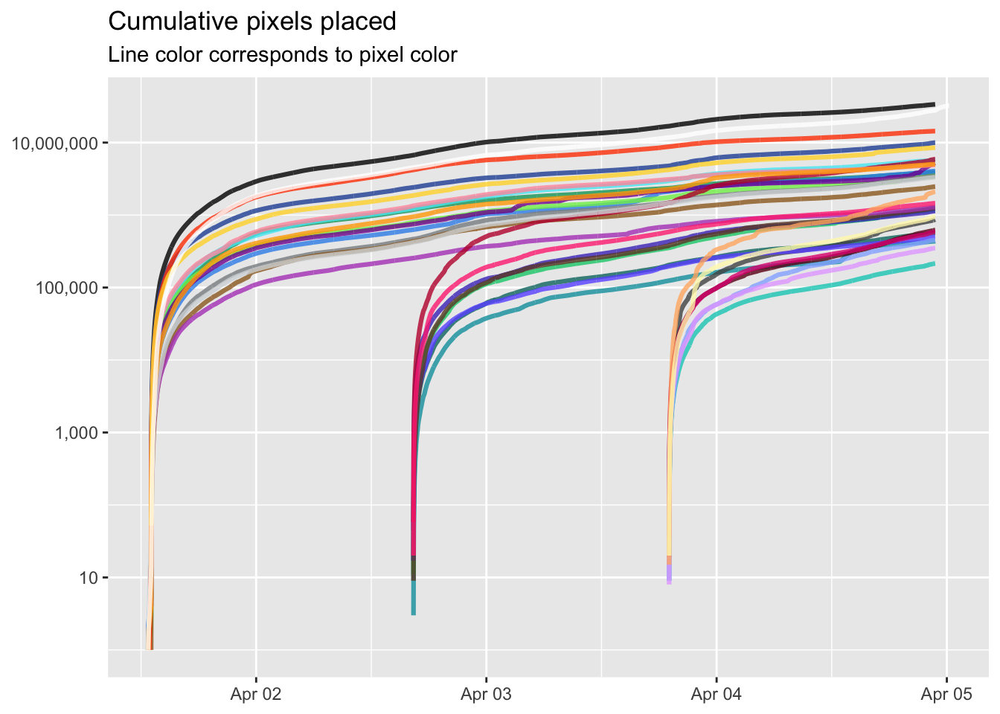
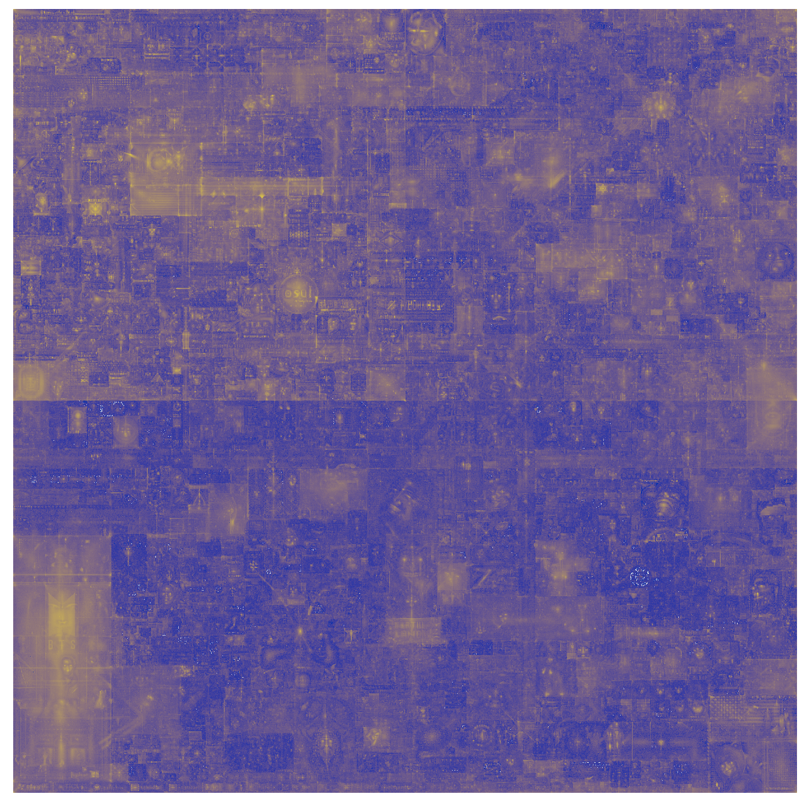
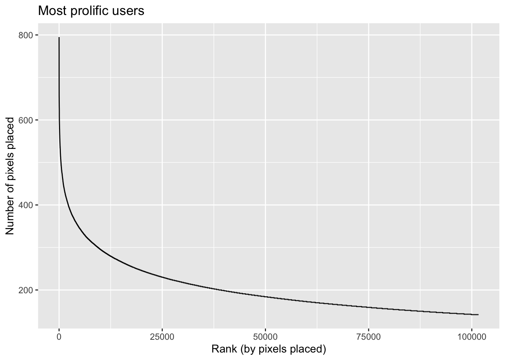
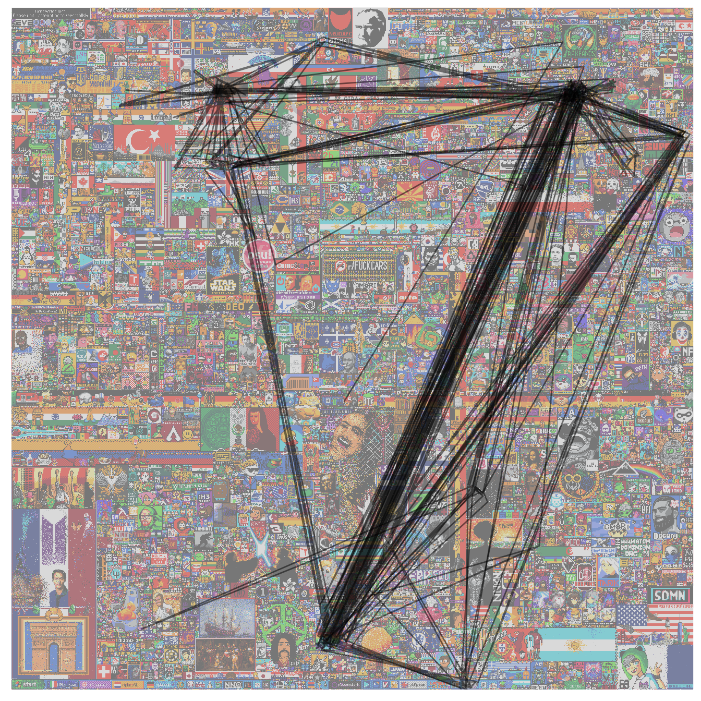
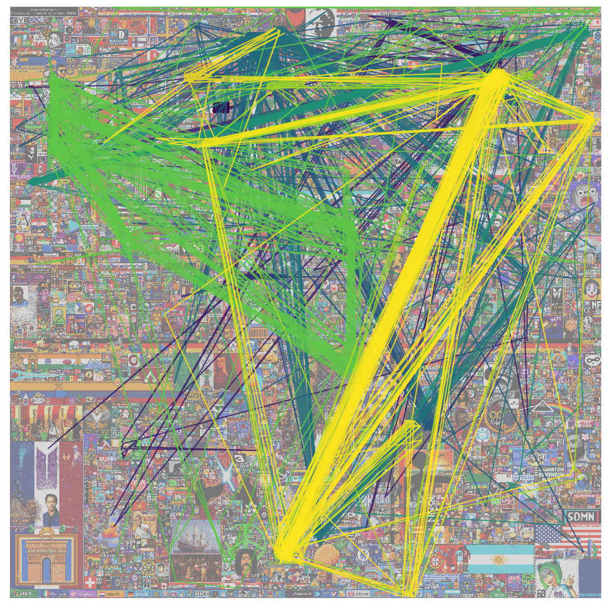
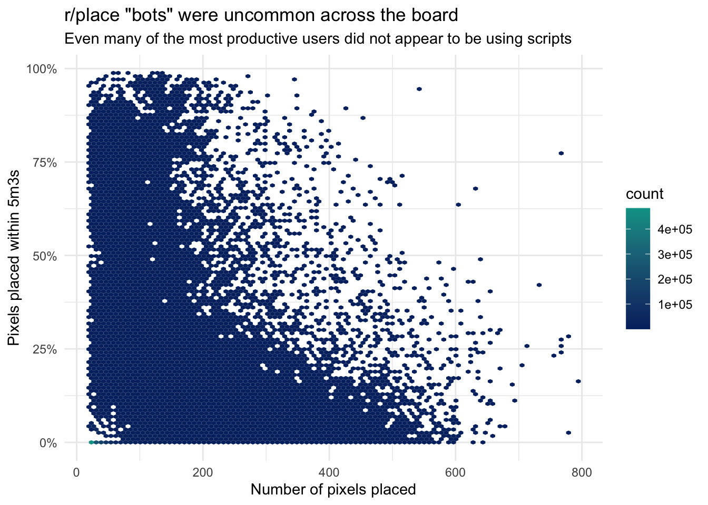
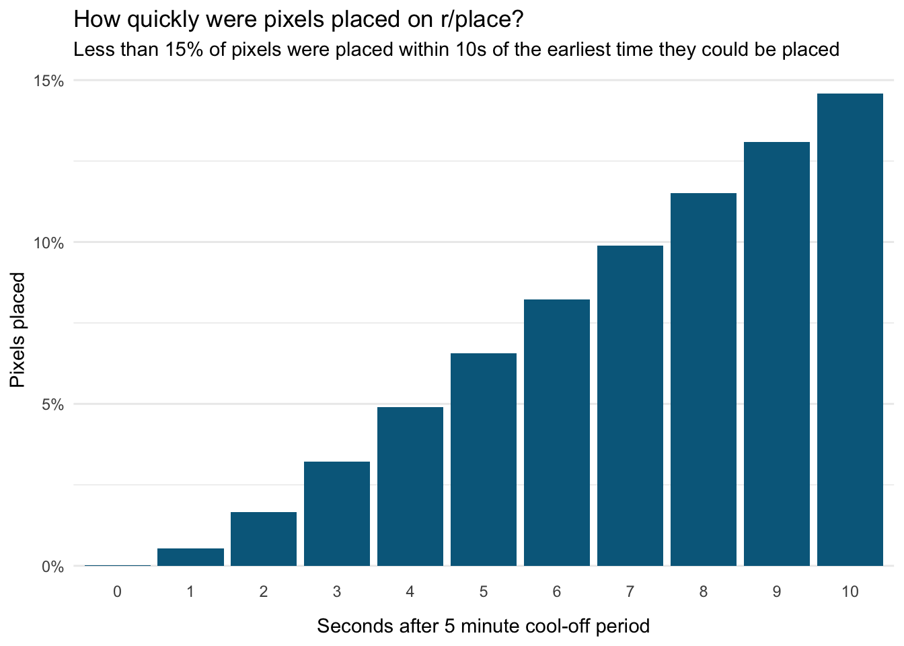

An analysis of Reddit’s r/place
My favorite thing on the Internet this year was Reddit’s r/place, a collaborative art project that lasted several days. Analyzing the official data from the event released by Reddit, I found that, contrary to my expectations, activity wasn’t dominated by a small fraction of users and bots were relatively rare.
Data Analysis

One of my favorite things on the internet this year was Reddit’s r/place, a multi-day collaborative art project in which each user could set the color of one pixel every five minutes on a giant 2000x2000 pixel canvas.
With millions of users, the result could easily have been a chaotic mess. Instead, subreddit communities coordinated and cooperated to produce something pretty amazing (see the final product at the top of this post).
After r/place ended, Reddit released all the pixel data from the event. I thought it might be interesting to see what I could learn from it.
How did the event unfold?
One of the most fascinating parts of watching r/place happen was all the ensuing drama – the feuds, the conflicts, the warring factions, the invasions. Groups were constantly battling over territory, there was a purely destructive group known as The Black Void whose goal was just to erase everything with black pixels, and certain areas were frequent targets for vandalism.
You can get a sense of all that by watching this timelapse video.
What did the event look like from the standpoint of the raw data? First, let’s look at pixel placement activity over time.
Overall activity over time 📈
The most obvious trend is increasing activity over time. Interest likely went up as more people learned about r/place.
The plot also shows moderator activity (the colored bands). This was a point of controversy and speculation – specifically, that admins were censoring stuff they didn’t like. But according to the data, the moderators took a pretty hands-off approach, only intervening 19 times.
When they did intervene, they drew a colored square over some objectionable content. The bands in the plot show the colors the mods used; the widths of the bands are relative to the size of the squares the mods drew.
Which colors were most popular? 🎨
At two points in the event, the admins increased the number of available pixel colors. By the end, there were 32 colors to pick from.
Let’s look at which colors were most popular and when.

Black and white were far and away the most popular colors.
You can see the two points when the new sets of colors were introduced. Most of the new colors never overtook the original colors in popularity, but a couple did.
Keep in mind that these totals don’t necessarily represent how prevalent a color is in the final canvas. This plot just shows how often people placed pixels with each color. That color may have been overwritten numerous times.
Which parts of the canvas were most contentious? 🥊
We can get the best visual sense of the drama that unfolded on r/place by looking at which pixels had the most activity. If a pixel was overwritten many times, that’s a sign that users were fighting over that area of the canvas.
In the picture below, I’ve made a heatmap where brighter spots indicate areas where there was more activity and darker spots indicate areas with less activity.

The amazing thing about this image is that, if you look carefully, you can make out many parts of the final canvas, like the Turkish flag or the osu! logo. This shows how contentious these areas were: they were frequently under attack and lots of work was put into preserving them.
The most active pixel was changed nearly 100,000 times. It happened to be the most upper-left pixel in the canvas. On the other end of the spectrum, there were nearly 2900 pixels (0.07% of the canvas) that were placed only once for the entire duration of the event. No pixels were completely untouched.
Individual user activity 💻
One specific question I had was whether most activity was driven by a small fraction of users. This is a common phenomenon online where, for example, a small percentage of users are responsible for the vast majority of comments. This is actually a broader phenomenon known as Zipf’s law in which, essentially, the most common items in a set are vastly more common than the the less common items. Was that true here? For example, I found that over 2.3 million users in this dataset only placed a single pixel.
I pulled the top 100,000 most prolific users (i.e., users that placed the most pixels) and plotted the number of pixels they placed in order of their their rank.

The results don’t quite follow Zipf’s law. It turns out the most extremely prolific users (who placed 600+ pixels) weren’t that much more prolific than thousands of others who placed 200+ pixels.
Let’s instead look at what they actually did, starting with the most prolific user, who placed 795 pixels. Below, I’ve traced this user’s path over roughly 3.5 days.

Looking at this user’s most frequent contributions, and after doing a bit of research on the r/place atlas I inferred that they are a My Little Pony fan. The My Little Pony community apparently started working in the upper left part of the canvas but moved to the upper right and later to the bottom, due to conflict with followers of a Twitch streamer. 🤷
This extremely active brony moved around a fair amount. Let’s look at some other users who barely moved at all. In the figure below, I’ve traced the paths of 10 of the least mobile users among the top 1000 most prolific.

The colors here are just meant to distinguish between users.
Among these users was one (the upper-leftmost one) who placed 539 pixels in roughly 58 hours. 443 of those pixels were placed in just a single location. That location? The upper left in the “connection lost” area (some kind of long-running inside joke). The color? Orange-red. That area pretty much never changed (and was always black). So this person basically accomplished nothing and was almost certainly a bot (more on that in a bit).
Another user in the figure above (the lime green colored one in the upper left) placed 501 pixels in a roughly a 50-hour period, all within a 36x41 pixel area. That area? The Canadian flag. The hilarious tragedy of the Canadian flag is documented here. What is impossible to determine is whether this person was trying to vandalize the flag or repair the vandalism.
The rise of the bots 🤖
Another major controversy was over the use of “bots” – scripts that automatically placed pixels for you whenever your five-minute cool-down period was up. They weren’t forbidden, but some people saw them as a kind of cheating.
Accusations of widespread bot use were common. But can we find evidence for that in the data?
I looked at every user who placed at least 20 pixels. I then looked at the percentage of times they placed a pixel within 303 seconds (5 minutes + 3 seconds) of their last pixel. In other words, how often were they placing pixels almost as soon as they possibly could?
Here are the results.

It looks like bots were relatively rare. And contrary to my expectations, even among the users that placed hundreds of pixels, they weren’t generally more likely to be bots. Some people who placed 400+ pixels almost never placed them immediately after their 5 minute cool-off periods, suggesting they were placing them manually.
I chose 3 seconds after the cool-off period ended somewhat arbitrarily, so I re-ran the analysis varying this delay from 0 to 10 seconds. Then I computed what percentage of pixels overall were placed within that period of time.

Obviously, the longer the delay, the more pixels get included. But even for delays up to 10 seconds, no more than 15% of all pixels were placed.
The bottom line: Surely some people were using scripts. Perhaps as many as 5-10% of pixels were placed by scripts. But this analysis suggests that the vast majority of users weren’t using them and the vast majority of pixels were manually placed.
Code
The full analysis code I used to generate these plots is available here.